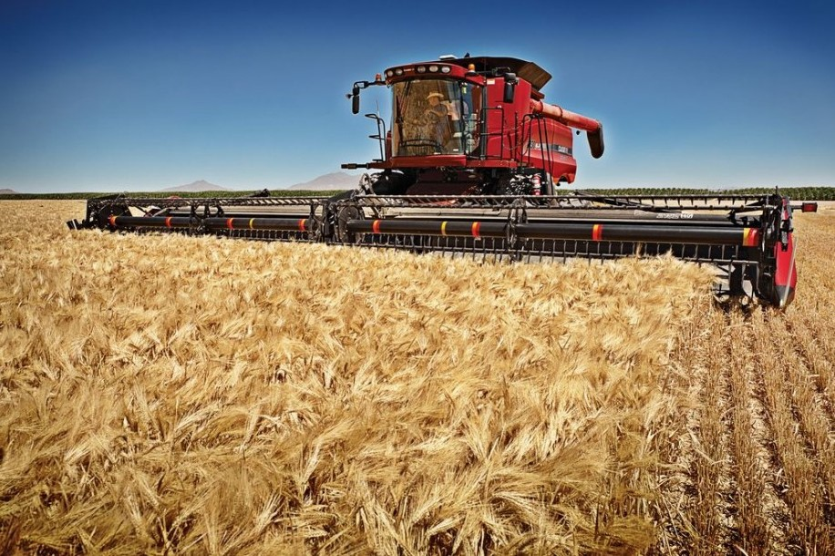

ТОВАРИСТВО З ОБМЕЖЕНОЮ ВІДПОВІДАЛЬНІСТЮ "ЖУРАВКА"
Реквізити ТОВ "ЖУРАВКА"
Адреса: Україна, 17620, Чернігівська обл., Варвинський р-н, село Журавка, МАЙДАН ЦЕНТРАЛЬНИЙ, будинок 3
Директор: СВИНАР ВІКТОР СТЕПАНОВИЧ
Статус: зареєстровано
Дата реєстрації: 2001-09-17
Статутний капітал, грн: 11801
Дата обрання (переходу) на спрощену систему оподаткування: 2015-01-01
ІПН: 316763525059
Дата реєстрації платником ПДВ: 2001-09-19
Діяльність: Зернові та технічні, Животноводство, Теплиці
Основний КВЕД: 01.50 Змішане сільське господарство
